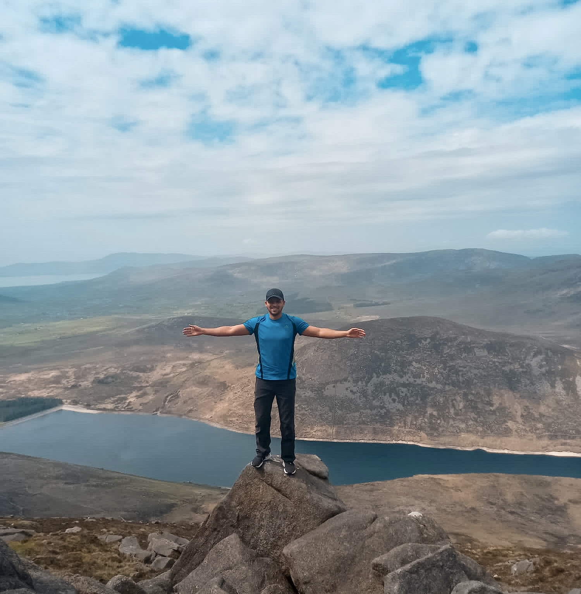
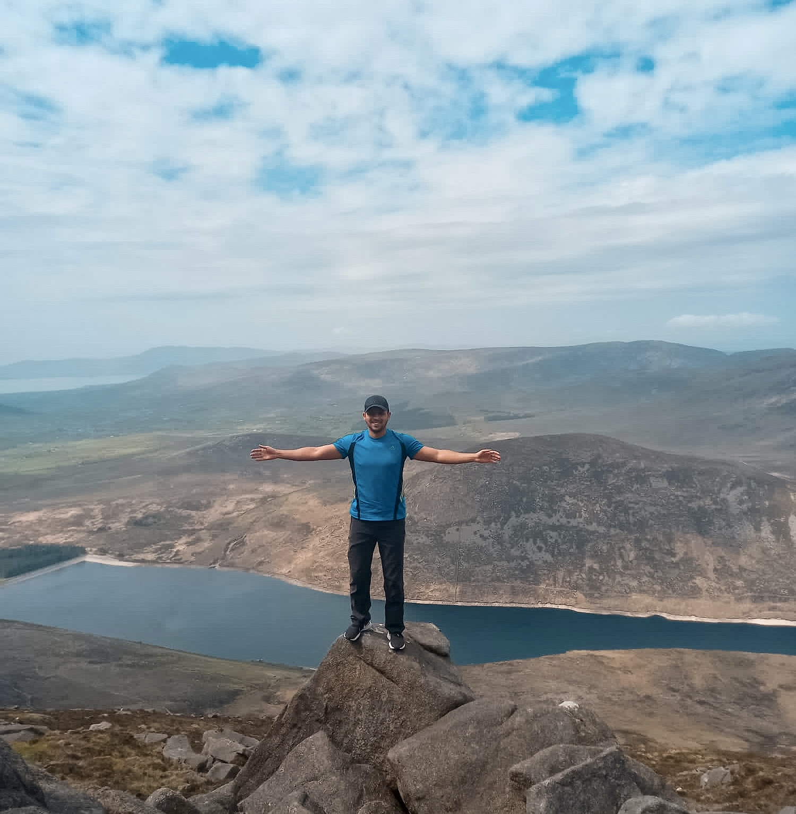

Our Mission
The Hike Style mission is to bring healthy and cheerful life to people who want to have new adventures and new experiences. This mission brings us together a community of nature lovers throughout our spectacular journey. We do it by connecting people, respecting the old customs and the most important but not the last, sharing new stories and moments. For our life is made up of moments.
Our mission is to unify the various types of adventures in one place. We are a community in which we can go to great meetings with people who like to ride a long bike through the nature trails, as well as those people who just want to take a long walk through the mountains.
 
